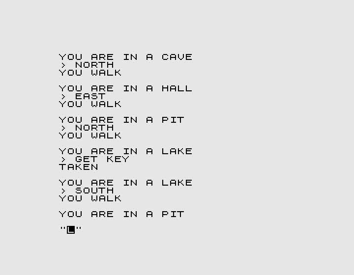
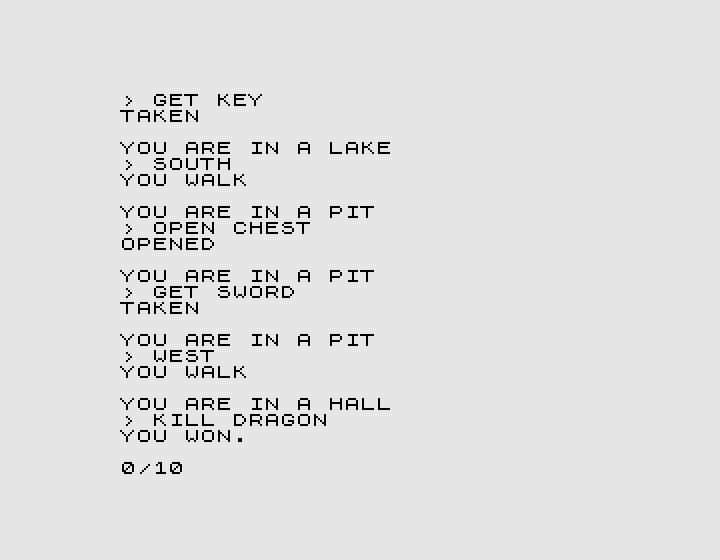

risorse | 10 cave adventure
10 CAVE ADVENTURE è un piccolo gioiello che ho scoperto per caso cercando in rete del software per lo ZX81 che ho recentemente sistemato. Si tratta di una avventura testuale realizzata da Einar Saukas per la versione non espansa del computer (richiede quindi solo 1K di RAM) per la competizione BASIC Tenliners del 2016. Come si può facilmente dedurre il programma è composto da 10 linee: un risultato di tutto rispetto, tenendo conto che il BASIC dello ZX81 ammette un'unica istruzione per ogni riga di programma.
Riporto integralmente la descrizione originale dell'implementazione preparata dall'autore:
=======================================================
"TENLINER CAVE ADVENTURE" - A ZX81 GAME BY EINAR SAUKAS
=======================================================
---------
BACKSTORY
---------
As a young warrior apprentice, you have been chosen by the village elders to
seek out the evil menace that lurks in some nearby caves. Once found, use any
means at your disposal to defeat it... Good luck on your quest!
--------
COMMANDS
--------
This is a very simple tiny text adventure for the ZX81, coded in 10 lines only.
It recognizes the following commands:
NORTH
SOUTH
EAST
WEST
INVENTORY
LOOK
LOOK <object>
GET <object>
OPEN <object>
KILL <object>
-----
ABOUT
-----
This game was created for the "BASIC Tenliners 2016" competition organized by
HOMEPUTERIUM (Das Homecomputer-Laboratorium an der Eider-Treene-Schule) in
Friedrichstadt, Germany. The competition was to design games in compiled or
interpreted BASIC for any 8-bit plataform (Atari, MSX, etc) restricted to 10
lines of code with limited size. It was the first ZX81 game to ever qualify for
this competition, not an easy task considering the limitations of ZX81 BASIC!
Each program line is under the 120 characters limit, without hidden control
codes or initialization. The program only uses a machine code routine from the
ZX81 ROM (accessed using "USR 3086") to scroll text on screen, because the ZX81
doesn't provide support for automatic text scrolling.
-------
DETAILS
-------
This game was adapted from "1 Line Cave Adventure", originally developed by
Digital Prawn and myself (Einar Saukas) for the ZX-Spectrum in 2007. An almost
complete solution for our original game is available here:
http://www.solutionarchive.com/game/id%2C5064/
The original game was already very small. Even so, it was quite challenging to
port it to the ZX81 in 10 lines of code, mainly because the ZX81 only accepts a
single instruction per command line. Even worse, due to the line length
restriction in this category, the instruction responsible for the main game
logic had to be broken into 3 separate lines, which means the entire game had to
be implemented using 8 instructions only!
The main solution was concatenating the entire game state into a single string
variable X$, and modeling the game logic as a finite state machine such that a
single formula updates the entire game state at once, in a single instruction,
based on player movement and action. This core game logic is assisted by another
2 formulas. The first formula validates and calculates player movement based on
player input and current location, execute in a single instruction. The second
formula validates and calculates player action based on player input, current
location, and game state, executed in a single instruction although "broken"
into 3 program lines because this last formula was too long.
Another problem was, the full list of text responses exceeds the imposed line
length limit. For this reason, the same string variable X$ is also used to
store some of these responses.
The complete game listing is provided here:
1 LET X$="100CANNOT DOYOU WALK OPENED CLOSED A SWORD A KEY NOTHING A CHEST A DRAGON A CORPSE "
2 PRINT TAB USR 3086+USR 3086;"YOU ARE IN A ";"CAVEPIT HALLLAKE"(VAL X$(1)*4-3 TO VAL X$(1)*4)
3 INPUT U$
4 LET M=2*(U$="NORTH")*(X$(1)<"3")-2*(U$="SOUTH")*(X$(1)>"2")+(X$(1)+U$="2WEST")-(X$(1)+U$="3EAST")
5 LET A=(3+VAL X$(2)+2*(X$(3)="2"))*(X$(1)+U$="2LOOK CHEST")+(11+(X$(3)="2"))*(X$(1)+U$="3KILL DRAGON")+(M<>0)
6 LET A=A+(5+VAL X$(1))*(U$="LOOK")+(6-VAL X$(3))*(U$="INVENTORY")+(6-(X$(3)="0"))*(X$(1)+U$="4LOOK CORPSE")
7 LET A=A+10*(X$( TO 3)+U$="400GET KEY")+2*(X$( TO 3)+U$="201OPEN CHEST")+10*(X$( TO 3)+U$="211GET SWORD")
8 LET X$( TO 3)=STR$ (VAL X$(1)+M)+STR$ (VAL X$(2)+(A=2))+STR$ (VAL X$(3)+(A=10))
9 PRINT TAB USR 3086;"> ";U$;TAB USR 3086;(X$+"TAKEN YOU DIED YOU WON. ")(A*9+4 TO A*9+12)
10 IF A<11 THEN GOTO 2
The complete list of variables is as follows:
X$ = current game state, where:
X$(1) = player location (1=cave, 2=pit, 3=hall, 4=lake)
X$(2) = chest (0=closed, 1=open)
X$(3) = inventory (0=nothing, 1=key, 2=sword)
X$(4 TO ) = partial list of text responses
U$ = player command
M = player movement (from -2 to 2)
A = player action (from 0 to 12)
The purpose of each program line is described below:
Line 1: Initialize game state (location=1, chest=0, inventory=0)
Line 2: Print current player location
Line 3: Input player command
Line 4: Validate and calculate player movement
Lines 5 to 7: Validate and calculate player action
Line 8: Update game state
Line 9: Print game response
Line 10: Repeat until player wins or dies
Easy, right? =:)
-------
CREDITS
-------
"TENLINER CAVE ADVENTURE" for the ZX81
by Einar Saukas (c) 2016.
Based on "1 Line Cave Adventure" for the ZX-Spectrum
by Digital Prawn and Einar Saukas (c) 2007.
Considerata la brevità del programma, mi sono chiesto se sarei stato in grado di determinare le mosse necessarie per risolvere l'avventura dall'analisi del listato, immaginando di avere un unico tentativo a disposizione. Quel che segue è il risultato di un paio di sere di reverse-engineering.
Il primo passo consiste nel ricostruire la mappa dei luoghi dell'avventura. Già sappiamo che le stanze in gioco sono quattro, rispettivamente cave, pit, hall e lake. Sapendo che X$(1) contiene l'indice della stanza corrente, dalla linea n. 4 possiamo ricavare alcune interessanti informazioni. Essa è composta da 4 termini, ognuno associato ad una direzione di movimento:
4 LET M = + 2 * (U$ = "NORTH") * (X$(1) < "3")
- 2 * (U$ = "SOUTH") * (X$(1) > "2")
+ (X$(1) + U$ = "2WEST")
- (X$(1) + U$ = "3EAST")
Sapendo che la variabile X$(1) contiene uno tra "1", "2", "3" e "4", M vale:
M rappresenta quindi la distanza tra il luogo in cui ci si trova attualmente e quello di destinazione; ciò è confermato dalla riga n. 8, dove si nota un'addizione per la determinazione del nuovo valore di X$(1):
8 LET X$( TO 3)=STR$ (VAL X$(1)+M)+...
Da ciò si può concludere che:
La stanza n.1 si trova quindi sopra la n.3, la n.3 sopra la n.4 e la n.3 a sinistra della n.2:
+-----+
| 4 |
+-----+
|
+-----+ +-----+
| 3 |---| 2 |
+-----+ +-----+
|
+-----+
| 1 |
+-----+
Le righe che determinano il valore della variabile A sono la 5, 6 e 7:
5 LET A=(3+VAL X$(2)+2*(X$(3)="2"))*(X$(1)+U$="2LOOK CHEST")+(11+(X$(3)="2"))*(X$(1)+U$="3KILL DRAGON")+(M<>0) 6 LET A=A+(5+VAL X$(1))*(U$="LOOK")+(6-VAL X$(3))*(U$="INVENTORY")+(6-(X$(3)="0"))*(X$(1)+U$="4LOOK CORPSE") 7 LET A=A+10*(X$( TO 3)+U$="400GET KEY")+2*(X$( TO 3)+U$="201OPEN CHEST")+10*(X$( TO 3)+U$="211GET SWORD")
Anche in questo caso siamo fronte ad una combinazione lineare di termini simili:
A = (3 + VAL X$(2) + 2 * (X$(3) = "2")) * (X$(1) + U$ = "2LOOK CHEST") + (11 + (X$(3) = "2")) * (X$(1) + U$ = "3KILL DRAGON") + (M <> 0) + (5 + VAL X$(1)) * (U$ = "LOOK") + (6 - VAL X$(3)) * (U$ = "INVENTORY") + (6 - (X$(3) = "0")) * (X$(1) + U$ = "4LOOK CORPSE") + 10 * (X$( TO 3) + U$ = "400GET KEY") + 2 * (X$( TO 3) + U$ = "201OPEN CHEST") + 10 * (X$( TO 3) + U$ = "211GET SWORD")
Poiché tutti i termini contengono un fattore associato ad un valore di U$ diverso, posso concludere che al più uno di essi sarà non nullo. Questo mi permette di analizzare un caso alla volta senza timore di perdere di vista qualche combinazione.
Segue il significato di alcune espressioni, riportate nell'ordine in cui compaiono nel listato:
Alla luce di ciò annoto i valori assunti dalla variabile A in una tabella:
| Termine | Comando | Valore di A | Condizione | ||
|---|---|---|---|---|---|
| location | chest | inventory | |||
| #1 | LOOK CHEST | 3 | pit | closed | not sword |
| 4 | pit | open | not sword | ||
| 6 | pit | open | sword | ||
| #2 | KILL DRAGON | 11 | hall | not sword | |
| 12 | hall | sword | |||
| #3 | «spostamento» | 1 | |||
| #4 | LOOK | 6 | cave | ||
| 7 | pit | ||||
| 8 | hall | ||||
| 9 | lake | ||||
| #5 | INVENTORY | 6 | nothing | ||
| 5 | key | ||||
| 4 | sword | ||||
| #6 | LOOK CORPSE | 5 | lake | nothing | |
| 6 | lake | not nothing | |||
| #7 | GET KEY | 10 | lake | closed | nothing |
| #8 | OPEN CHEST | 2 | pit | closed | key |
| #9 | GET SWORD | 10 | pit | open | key |
Per qualunque altra combinazione la variabile A assume il valore zero.
La risposta del programma viene estratta dalla stringa di stato X$ in funzione del valore della A. Dal frammento della linea n.9 evidenziato:
9 PRINT ...;(X$+"TAKEN YOU DIED YOU WON. ")(A*9+4 TO A*9+12)
si deduce che la stringa di stato contiene una sequenza di risposte cablate di lunghezza 9. Suddividendo il contenuto a blocchi di 9 caratteri — ignorando i primi tre caratteri che sappiamo rappresentare location, chest e inventory — si ottiene la seguente corrispondenza:
| Valore di A | Risposta |
|---|---|
| 0 | CANNOT DO |
| 1 | YOU WALK |
| 2 | OPENED |
| 3 | CLOSED |
| 4 | A SWORD |
| 5 | A KEY |
| 6 | NOTHING |
| 7 | A CHEST |
| 8 | A DRAGON |
| 9 | A CORPSE |
| 10 | TAKEN |
| 11 | YOU DIED |
| 12 | YOU WON. |
A questo punto dovrebbe essere possibile determinare la sequenza vincente di comandi.
La condizione d'uscita è esplicitata alla riga n.10:
10 IF A<11 THEN GOTO 2
Dalle risposte si deduce che la vittoria si ottiene per A=12, ovvero impartendo il comando KILL DRAGON nella hall possedendo la sword. Per possedere la sword occorre che si realizzi la condizione X$(3)="2". Poiché all'inizio del gioco X$(3)="0" e, come si può desumere dalla riga n.8:
8 LET X$( TO 3)=...+...+STR$ (VAL X$(3)+(A=10))
quel valore viene incrementato quando A=10, è necessario realizzare tale condizione per due volte. Consultando la tabella delle azioni si vede che A=10 si ottiene in due casi:
Va da sè che il primo comando da eseguire è GET KEY; l'unica condizione necessaria per concludere con successo l'azione è trovarsi nella locazione n.4, che si raggiunge dalla stanza iniziale con la sequenza di movimenti:
NORTH EAST NORTH
Giunti al lake si raccoglie la key:
GET KEY
Prima di procedere con il comando GET SWORD è necessario cambiare di stato al flag chest, che da closed deve diventare open. Il modo per farlo lo suggerisce sempre la riga n.8:
8 LET X$( TO 3)=...+STR$ (VAL X$(2)+(A=2))+...
La condizione A=2 si ottiene con OPEN CHEST in pit con chest closed e inventory key. Basta quindi raggiungere il luogo giusto:
SOUTH
A questo punto si può raccogliere la sword in due mosse:
OPEN CHEST GET SWORD
Ora siamo pronti per l'azione decisiva, da eseguire in hall:
WEST KILL DRAGON
La sequenza vincente è dunque:
NORTH EAST NORTH GET KEY SOUTH OPEN CHEST GET SWORD WEST KILL DRAGON
Non resta che provarla:
Lo stato del programma dopo le prime cinque mosse
Vittoria!
Una copia locale del nastro virtuale che ho usato per giocare all'avventura è disponibile qui.
Pagina modificata il 21/12/2019